Speech
to text
How speech recognition works, how fast and accurate it is, what it costs, and how to choose for live and recorded audio.
Press → to start · O for overview · N for notes
"Can AI transcribe this for us?"
Clients ask this about contact-centre calls, meetings, interviews, clinical visits and voice agents. The answer depends on the following factors.
Agenda
How it works
Seventy years of speech recognition, and how a model turns sound into words.
Live transcription
Why speed matters, where the delay comes from, and when the caller has finished.
Speakers and languages
Telling speakers apart, and how well the world's languages are covered.
Who the players are
The main options, what they cost per audio hour, and where they can run.
How they are measured
Error rates, benchmarks, human performance, and where the frontier is.
What to recommend
A decision guide, default picks, and how to test on a client's own audio.
Three questions for comparing services
When must the text arrive?
- After the recording ends: batch
- Within a few seconds: live captions, agent assist
- Within a fraction of a second, mid-conversation: voice agents
What kind of model is listening?
- A fast model that writes as it hears (CTC or transducer)
- A model that hears a whole window, then writes (Whisper)
- A language model with ears, which you can instruct (speech LLM)
What else must come back?
- Words only
- Punctuation, numbers as digits, timestamps
- Speaker labels, languages, redacted personal data
Development of speech recognition
- 1952Bell Labs' Audrey recognises ten digits from one speaker.
- 1970s–80sIBM and Dragon model speech with probabilities (hidden Markov models), the standard for 30 years.
- 1997Dragon NaturallySpeaking: continuous dictation on a PC.
- 2011Siri.
- 2012Neural networks replace the statistical sound models at Google, Microsoft and IBM.
- 2012–15The designs still used today: CTC, the transducer, and attention.
- 2016–17Microsoft and IBM match professional transcribers on Switchboard phone calls (5.1%).
- 2020Conformer and wav2vec 2.0: better encoders, and learning from unlabelled audio.
- Sep 2022OpenAI's Whisper, trained on 680,000 hours from the web, released with open weights.
- 2023–24Meta's MMS covers 1,107 languages. NVIDIA's open Parakeet and Canary models top the leaderboards.
- 2024"Careless Whisper" and AP reporting on invented text in medical transcripts.
- Mar 2025OpenAI's gpt-4o-transcribe: a language model that transcribes.
- Oct 2025Deepgram Flux detects the end of a turn inside the model.
- Nov 2025Meta's Omnilingual ASR: 1,600+ languages.
- Jul–OctOpenAI GPT-Transcribe, Gemini 3.5 Transcribe, Meta Muse, Microsoft MAI-Transcribe-2, Mistral Voxtral 3, NVIDIA Nemotron 3.5 Transcribe.
- SepOpenAI GPT-Live: full-duplex voice.
- OctDeepgram agrees to buy Daily, maker of Pipecat.
From sound to a picture of sound
Four ways to turn sound into words
Every modern system has an encoder that summarises the sound and a decoder that writes the words. The decoder decides most of the practical trade-offs.
Whisper and the speech LLM
OpenAI Whisper
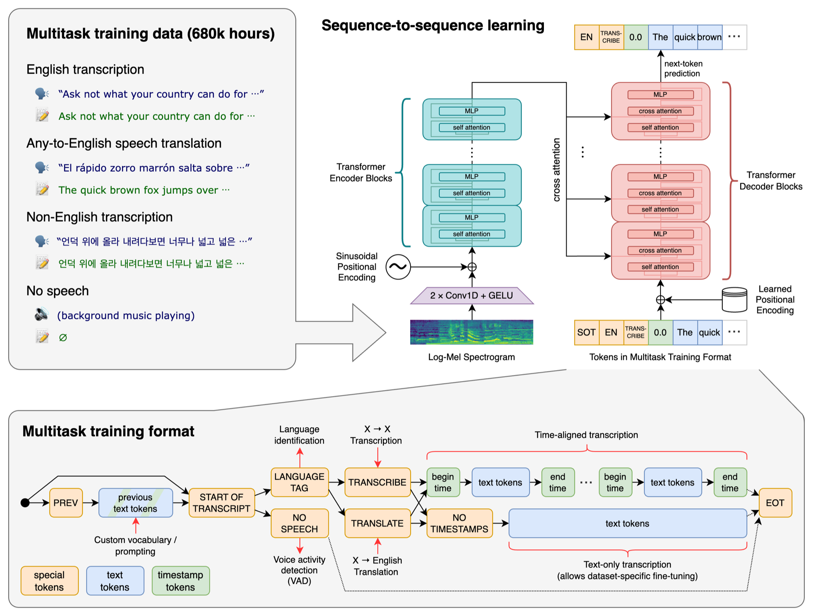
Image: OpenAI, "Robust Speech Recognition via Large-Scale Weak Supervision", 2022.
- 680,000 hours of audio with transcripts found on the web, 117,000 of them in 96 other languages.
- Learned to write ordinary text, with punctuation and numbers, so no separate formatting step.
- Open weights. The turbo version still has about 5.6 million downloads a month on Hugging Face.
Speech LLMs
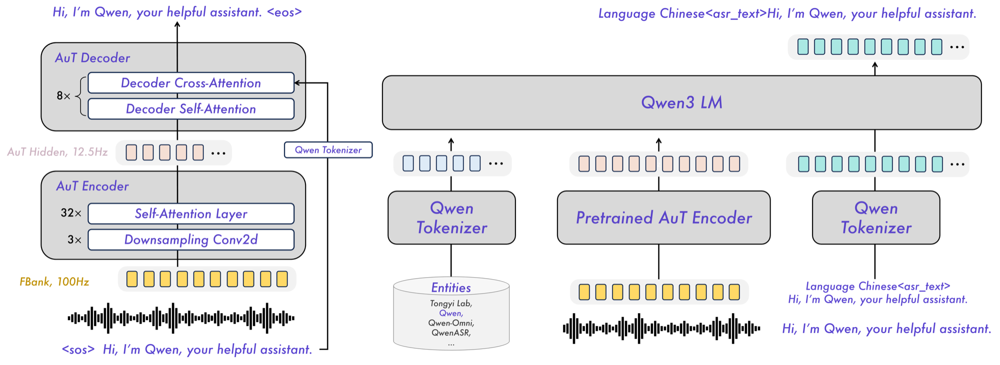
Image: Alibaba Qwen team, Qwen3-ASR technical report, January 2026.
- An audio encoder turns sound into tokens that a language model reads alongside a text prompt.
- Accepts context: the topic, expected names and products, and which languages to expect.
- Used by OpenAI GPT-Transcribe, Gemini, Voxtral, Qwen3-ASR, AssemblyAI Universal-3 Pro and NVIDIA Nemotron 3.5 Transcribe.
Transcribing while someone is still speaking
Re-run a non-streaming model
Transcribe a growing buffer again and again, and keep only the words two passes agree on. Simple, but slow (about 3.3 seconds) and wasteful.
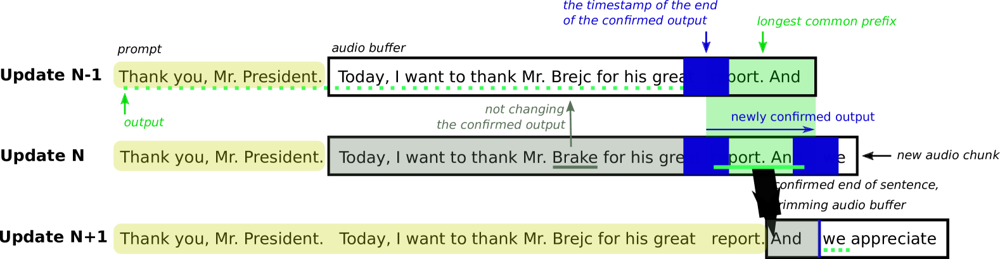
Process small chunks and reuse past work
Each new 80 ms chunk is processed once, reusing stored results from earlier chunks. The chunk size sets the trade-off between delay and accuracy.
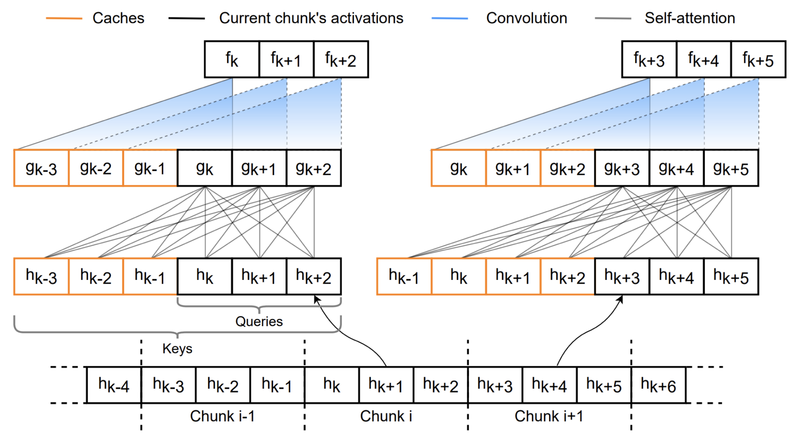
Let the text run behind the audio
The model writes text a set distance behind the audio, or decides word by word whether to wait for more. Meta trained its model to balance errors against delay.
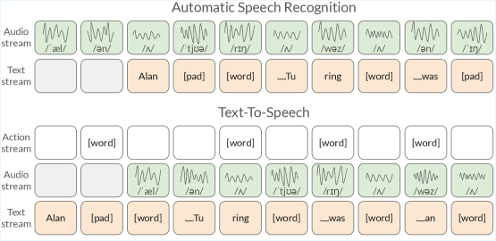
Images: Macháček, Dabre and Bojar (arXiv 2307.14743); NVIDIA Nemotron streaming model card (2026); Kyutai, Delayed Streams Modeling (arXiv 2509.08753).
From raw output to a usable transcript
- Numbers and dates carry the highest-stakes errors. Rule-based formatting is predictable; a language model is fluent but can quietly change a number.
- Custom vocabulary fixes names and jargon, but too strong a bias makes the model hear the term where it was not said. Test for false positives.
- Redaction can only remove what was recognised. A misheard digit is not redacted.
- "Clean" output drops fillers and false starts. Legal, compliance and medical uses often need the verbatim text.
- Speech LLMs do several of these steps in one model. Simpler to build, harder to audit.
Common errors in speech recognition
| Error | Evidence |
|---|---|
| Invented text | About 1% of Whisper API transcripts contained whole phrases never spoken; 38% of those were harmful (Careless Whisper, 2024). Silence and long pauses trigger it. |
| Accent and dialect | Five commercial systems averaged 35% word error for Black speakers and 19% for white speakers; 23% against 1.6% of clips were unusable (PNAS, 2020). |
| Phone audio and noise | 8 kHz audio removes the high frequencies; noise, distance and echo raise errors sharply. |
| People talking at once | Most models transcribe one voice and drop the other. Multi-speaker models are new in 2025–26. |
| Numbers, names, jargon | The words that matter most are rare in training data, so the model prefers a common word that sounds similar. |
| Switching language mid-sentence | In one vendor's test across five language pairs, error ranged from 7.7% to 44.6% (GPT-4o Transcribe). |
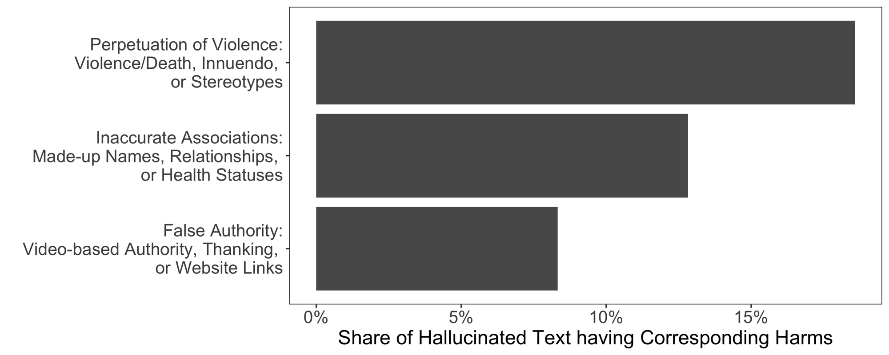
Word error rate
Line up the transcript against a human reference and count the words that were substituted, deleted or inserted.
Why speed matters
| Tier | Budget | Use cases | What matters most |
|---|---|---|---|
| Conversation | About 1 s, voice to voice | Voice agents | Detecting the end of a turn; the language model's first word |
| Assistance | 1–5 s | Agent assist, compliance alerts, live meeting notes | Stable partial text; correct speaker |
| Display | 1–5 s (Ofcom: mean of 4.5 s for live TV) | Live captions | Text that does not jump about; names |
| After the event | Seconds to hours | Clinical notes, call analytics, QA scoring | Accuracy, speakers, formatting |
What a streaming service sends back
Simplified. Event names and fields differ between providers.
- Partial results arrive within a few hundred milliseconds and may change. Captions show them; agents should not act on them.
- Final results are committed once the service decides a phrase or turn has ended. Voice agents act on these.
- Controlling the "flicker". AWS lets you trade speed for stability; AssemblyAI's partials never change once sent; Speechmatics' partials are 10–25% less accurate than its finals.
- A "finalise now" signal lets the application end a turn early. Daily found the fastest services all support one; for the others every turn takes as long as the slowest 5%.
- Billing. Some services charge for the time the connection is open, not the audio sent: hold music costs money.
Where the time goes in a voice agent
Deciding when the caller has finished
| Detector | Published latency |
|---|---|
| Deepgram Flux (in the model) | About 260 ms median; 1.5 s at the 95th percentile |
| Pipecat Smart Turn v3 (open, CPU) | About 250 ms from a pause; 13 ms to run |
| AssemblyAI Universal-3.5 Pro Realtime | 568 ms median to a complete turn |
| LiveKit turn detector, OpenAI semantic VAD | Not comparable or not published |
Precision and delay in turn detection
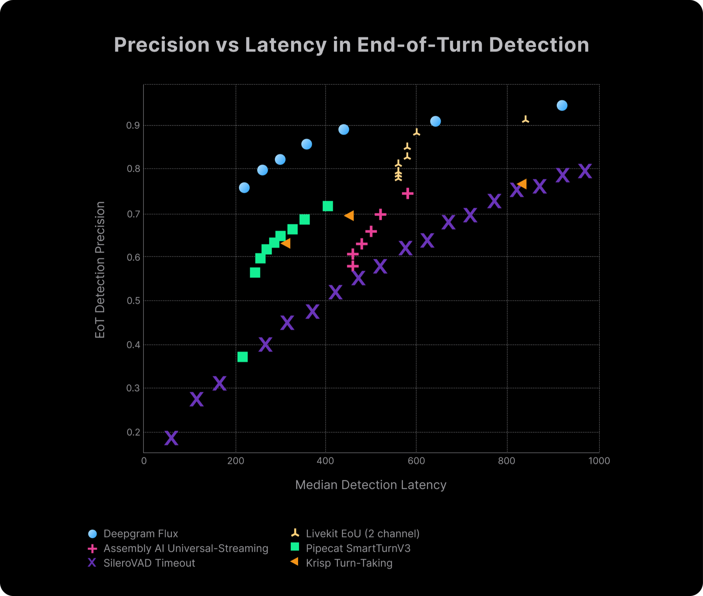
- Silence timeouts (purple crosses) need about 900 ms to be right 80% of the time, and are right only 40% of the time at 270 ms.
- Model-based detectors move the whole curve up and to the left: better decisions sooner. No choice of timeout can do that.
- The ordering is Deepgram's claim on its own test. The shape is the point, and other vendors' charts show the same shape.
- The current recommended setup (Pipecat): a short silence trigger, a small turn model on CPU, and a one-token "complete or not" tag from the language model.
Live transcription costs accuracy and money
| Vendor | Live model | Batch model | Live is worse by |
|---|---|---|---|
| Gemini 3.5 Transcribe Live 2.9% | Gemini 3.5 Transcribe 2.6% | 11% | |
| Microsoft | MAI-Transcribe-2 Streaming 2.5% | MAI-Transcribe-2 2.0% | 23% |
| Deepgram | Nova-3 live 6.5% | Nova-3 5.2% | 25% |
| AssemblyAI | Universal-3.5 Pro Realtime 4.0% | Universal-3.5 Pro 3.0% | 34% |
| ElevenLabs | Scribe v2 Realtime 3.0% | Scribe v2 2.2% | 36% |
Relative difference, our calculation from the board's batch and streaming tables.
Price per audio hour| Vendor | Live | Batch | Ratio |
|---|---|---|---|
| Deepgram Nova-3 | $0.46 | $0.26 | 1.8× |
| AssemblyAI, top models | $0.45 | $0.21 | 2.1× |
| OpenAI GPT-Live-Transcribe / GPT-Transcribe | $1.02 | $0.27 | 3.8× |
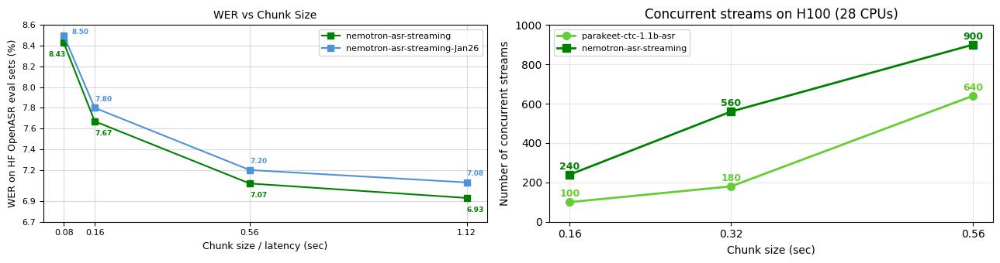
- Why live is worse: the model can look only a short way ahead, gets no second pass, and has less context for names and numbers.
- Delay, accuracy and cost trade off together. Waiting longer per chunk lowers the error rate and lets one GPU serve more callers.
- Common pattern: stream for the live use, then re-transcribe the recording in batch for the record and for analytics.
Why published latency figures disagree
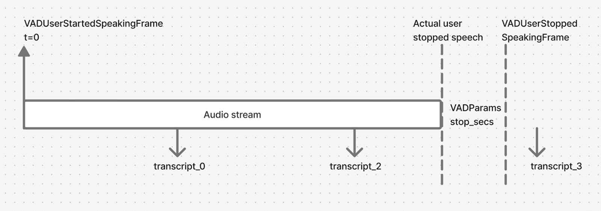
| "Latency" can mean | Clock starts | Clock stops |
|---|---|---|
| Time to first text | First audio sent | First event. Easy to game |
| Time to final | End of speech, or after a detector has noticed it | Final transcript |
| End-of-turn latency | Caller stops | "Turn over" event |
| Voice to voice | Caller stops | Reply reaches the caller's ear |
- Same model, different clocks. Deepgram Nova-3: 60 ms on Artificial Analysis, 247 ms on Pipecat. Most of the gap is Pipecat's 200 ms detector wait.
- Medians hide tails. One service has a 392 ms median and a 1,292 ms 95th percentile.
- Rankings flip. Soniox is near the top for accuracy on Pipecat (1.1%) and last on Artificial Analysis (11.9%). Neither board explains the gap.
- Vendor figures often count model time only: no network, no endpointing.
Cascaded pipelines and speech-to-speech models
| Model | First audio | Reasoning test |
|---|---|---|
| GPT-Realtime-1.5 | 0.81 s | 81% |
| Grok Voice 3.0 | 0.81 s | 99% |
| GPT-Realtime-2, high reasoning | 1.14 s | 97% |
| Amazon Nova 2.0 Sonic | 1.14 s | 88% |
| Gemini 3.8 Live | 1.18 s | 92% |
| Gemini 3.1 Flash Live, high | 2.99 s | 97% |
Reasoning test: Big Bench Audio. First audio excludes turn detection and the caller's network.
- The transcript is the record. Regulated firms must keep what was said. A cascade produces it; speech-to-speech models add it as an optional, weaker extra.
- Control. Text between stages can be checked, redacted and logged before the model sees it or speaks it.
- Tools and reasoning. Speech-to-speech models follow instructions and call tools less reliably than text models. OpenAI's GPT-Live hands reasoning to a separate text model.
- Choice. Pick the best transcription for Arabic, the cheapest model for the task, and the brand's voice, and change each separately.
- Cost. The Pipecat primer puts an agent on OpenAI's Realtime API at 3–5 times the cost of a cascade.
Deployment choices that affect speed
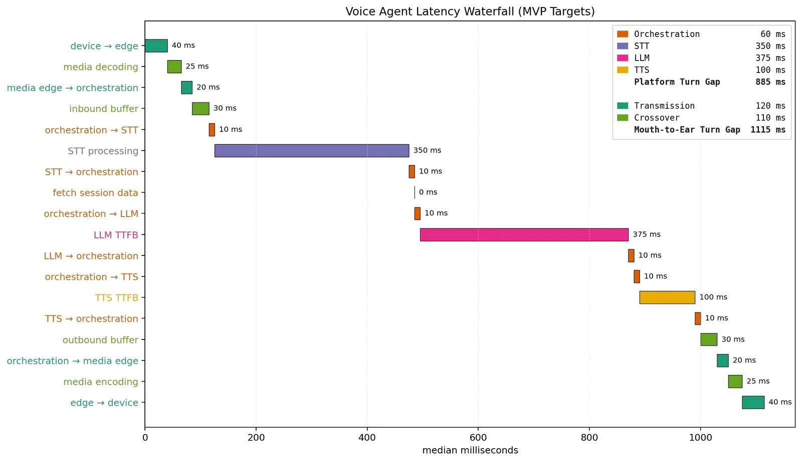
- Region. Put transcription, the language model and speech synthesis in one region near the caller. From the UK, a US West service adds about 125 ms of round trip.
- Telephony. Calls arrive as 8 kHz audio with a few hundred milliseconds of carrier buffering. Most models expect 16 kHz, so test on real call audio.
- Separate channels. Telephony platforms provide the caller and the agent as separate tracks. Transcribe each on its own and speaker labels come for free.
- Self-hosting. NVIDIA's open streaming model serves 240 live calls per H100 at 160 ms chunks and 900 at 560 ms. Deepgram, Speechmatics, AssemblyAI and others sell containers for the client's own cloud.
- Concurrency limits. Deepgram's standard plan allows 150 live connections; AssemblyAI 100 new streams a minute. Negotiate concurrency as well as price.
- Measure the slowest 5%, not the median, and occasionally time a recorded call end to end.
How diarisation works
Diarisation answers "who spoke when". It gives each voice an anonymous label, such as Speaker 1, that stays the same through the recording. It does not know names.
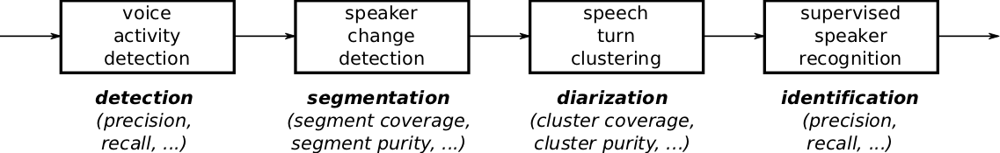
- Classic pipeline. Find the speech, cut it into short segments, turn each into a "voiceprint" vector, then group similar vectors. Each group is a speaker.
- End-to-end models such as NVIDIA's Sortformer label every frame with who is speaking, including two people at once, and number speakers in order of arrival so labels stay consistent in a live stream.
- Joint models (AssemblyAI Universal-3.5 Pro, Meta Muse, NVIDIA Nemotron 3.5 Transcribe) write the words and the speaker labels together.
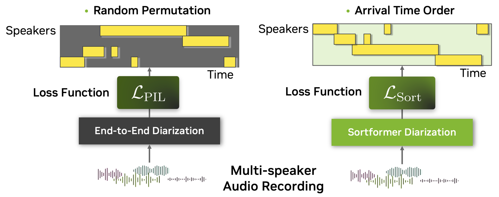
Diarisation error rate
What makes diarisation hard
| Recording | Error rate (DER) |
|---|---|
| Phone calls, 2 speakers | 6.7% |
| Phone calls, 4 speakers | 13.4% |
| Phone calls, 6 speakers | 24.5% (model limit is 4) |
| Mixed real-world audio, 5–9 speakers | 41.4% |
| Audio | Best live DER | Others tested |
|---|---|---|
| Phone calls | 10.3% | 23–34% |
| Meetings | 44.6% | 58–67% |
| Restaurant | 54.4% | 64–76% |
NVIDIA model card; pyannoteAI streaming benchmark, Oct 2026 (vendor-run; others: Deepgram, AssemblyAI, Speechmatics).
- Overlap. Two people speaking at once is where most missed speech comes from.
- Short turns. "Yes", "mm-hm" and "right" are too short for a reliable voiceprint.
- Unknown speaker count. The system must guess how many people there are. Tell it when you know.
- Far microphones. One microphone in a meeting room picks up echo, distance and noise for every voice.
- Speech LLMs get the words but not the speakers. On 22 Indian languages, Gemini 3 Pro had the best word accuracy with speakers attached, but 74% DER. Sarvam, an Indian specialist, had the lowest DER at 16%, ahead of AWS at 23.5%.
Speaker labels in live and recorded audio
| Service | Batch | Live | Max speakers |
|---|---|---|---|
| Amazon Transcribe | Yes | Yes | 30 |
| Azure Speech | Yes | Yes, +$0.30/hr | Under 36 |
| Google Chirp 3 | Yes, 14 locales | No | – |
| Gemini 3.5 Transcribe | Yes | No | 8 |
| OpenAI GPT-Transcribe / Live | No | No | – |
| Deepgram Nova-3 | Yes | Yes, +$0.12/hr | Not stated |
| AssemblyAI Universal-3.5 / 3.6 Pro | Yes | Beta, +$0.12/hr | 10 live |
| Speechmatics, Soniox | Yes | Yes, included | No limit / 15 |
| ElevenLabs Scribe v2 | Yes | No | 32 |
| NVIDIA Streaming Sortformer (open) | – | Yes | 4 |
- Contact centres: record the agent and the customer on separate channels and labelling is trivial. Many platforms default to one channel to save storage, so check the client's archive.
- Meetings: bots can capture a separate stream per participant on Teams, Meet and Zoom, with the participant's name attached. A meeting room is still one participant with many voices.
- Voice agents: the agent's own speech is known, so only the caller needs transcribing.
Language coverage claims
| Service | Batch | Live |
|---|---|---|
| Meta Omnilingual ASR (open) | 1,600+ | – |
| Amazon Transcribe | 113 locales | 99 locales |
| Google Chirp 3 | 109 locales (29 GA) | 109 locales |
| ElevenLabs Scribe v2 | 90+ | 90+ |
| Gemini 3.5 Transcribe | 85+ | 85+ |
| Soniox v5 | 60+ | 60+ |
| MAI-Transcribe-2 | 60 | 60 (preview) |
| Speechmatics | 55–56 | 55–56 |
| Deepgram Nova-3 / Flux | 40+ | 40+ / 10 |
| AssemblyAI Universal-3.5 / 3.6 Pro | 18 | 32 |
| OpenAI GPT-Transcribe / Live | Not published | Not published |
Vendor documentation, 3 Nov 2026. Research packs B and E.
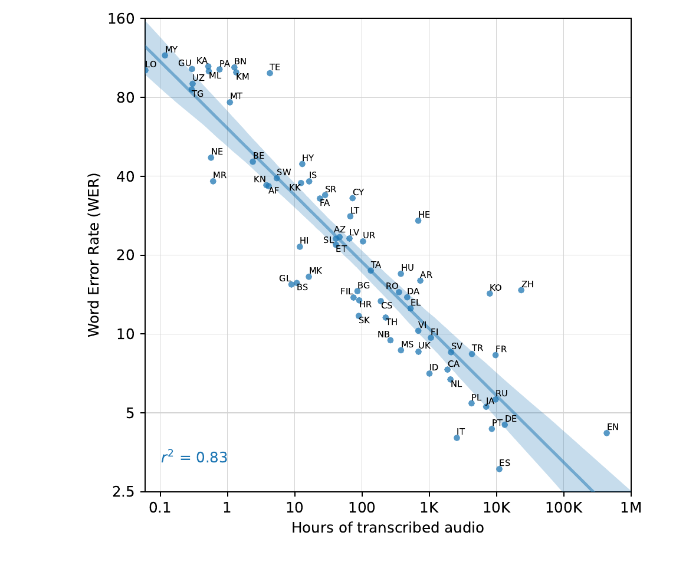
Languages beyond the commercial lists
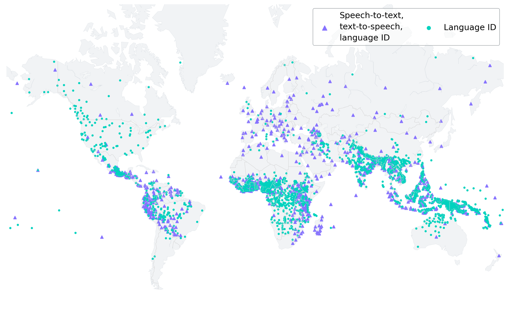
- Meta MMS (2023) covered 1,107 languages, mostly from recordings of people reading religious texts.
- Meta Omnilingual ASR (November 2025) covers 1,600+ languages, 500 of them never served before, and can learn a new one from a handful of examples. Open weights, Apache 2.0.
- Coverage is not quality. Its 7B model scores 9.4% on English on the Open ASR Leaderboard, against about 5–7% for English-focused models.
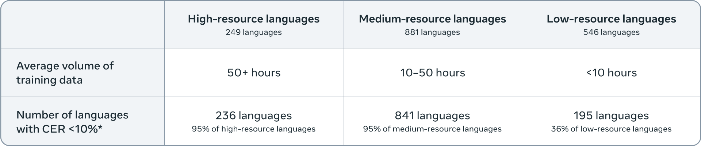
Error rates for 21 business languages
- On read speech the frontier is 2–5% for 18 of these 21 languages. Arabic, Swahili and Cantonese lag.
- The gap between products is largest in the hardest languages. Swahili: 9.2% for the best, 19.8% for GPT-Transcribe, 35.4% for Whisper large-v3.
- Whisper large-v3, still the default open model, is two to ten times worse than the frontier outside English and Western Europe.
- Read speech flatters. These are people reading Wikipedia sentences. On spontaneous Indian speech, the best system scores about 19%; on accented English (EdAcc), 19.7%.
FLEURS test set, language given. "Best 2026" is the lowest of seven systems in Microsoft's MAI-Transcribe-2 chart (Sep 2026, vendor-run); Whisper large-v2 from the Whisper paper (2022). Chinese, Japanese, Thai and Cantonese use character error rate.
Accents, dialects and mixed languages
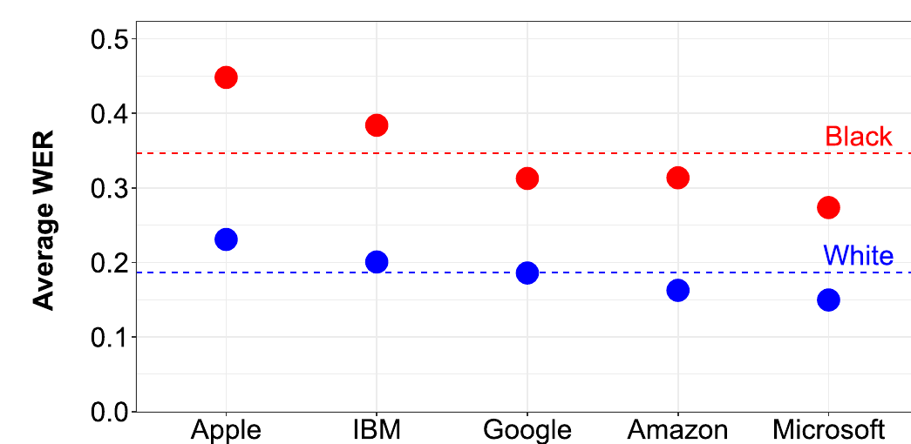
- Arabic dialects remain hard: the best open model scores about 50% error on Moroccan Arabic.
- Accented English (EdAcc) scores 19.7% against 2.7% for clean US read speech.
- Switching language mid-sentence is common in India, the Gulf, the US and much of Africa. Deepgram, AssemblyAI, Soniox, Speechmatics, Microsoft, Google and Sarvam all claim support.
- Measured rarely. No head-to-head test of commercial services exists. On the one public Korean–English test, GPT-4o-transcribe scored 21.8% on mixed speech against 2.5% on Korean alone.
- Automatic language detection can mislabel accented English as another language. Give the expected languages when you know them.
- Regional specialists often beat global vendors: Sarvam on Indian languages, Intron on African names (12.4% against over 50%, the vendor's own test), Cohere Transcribe Arabic on Arabic.
Weaknesses of speech recognition today
Where the frontier stands on each weakness in November 2026, and what it means for client work.
| Weakness | Where the frontier stands | Direction | For client work |
|---|---|---|---|
| Invented text | About 1% of Whisper transcripts in 2023 contained invented phrases. Vendors claim better silence handling, but none publishes a rate. | Not measured | Cut silence first, keep the audio, and test on hold music and long pauses. |
| Live accuracy | The best live models reach 2.5–3% error on Artificial Analysis, under 0.4 s to the final text, against 2–2.5% in batch. | Improving fast | Stream for the live use; re-transcribe in batch for the record. |
| Turn-taking | Model-based detectors decide in about 250 ms; silence timeouts need 800 ms or more to avoid interrupting. | Improving fast | Test interruptions and dead air on real calls, at the slowest 5%. |
| Many speakers | About 7% DER on two-person calls; 40–55% in meetings and noisy rooms. Several services have no live speaker labels. | Slow | Record one channel per person wherever possible. |
| Languages beyond the top 20 | 2–5% on read speech for most major languages; Arabic, Swahili and Cantonese 6–9%; the long tail far worse. | Improving | Test each language separately; consider a regional specialist. |
| Spontaneous and accented speech | Several times the read-speech error rate (about 19% on Indian conversational speech and accented English). | Barely tracked | Build the test set from the client's own recordings. |
| Mixed languages | Widely claimed, rarely measured: 21.8% on Korean–English mixing against 2.5% on Korean alone. | Not tracked | Include mixed-language calls in the test, and give the expected languages. |
| Numbers and names | Labs now target them (OpenAI's 2026 models, gpt-realtime-2.1) but publish no standard measure. | Improving, unmeasured | Score accuracy on amounts, IDs and names separately from WER. |
Five families of service
Cloud speech services
Transcription run by AWS, Azure or Google Cloud inside the client's account and region, with their contracts and compliance.
Google Chirp 3 · Gemini on Vertex
$0.18–1.00 / audio hour
AI lab models
Transcription models from the large AI labs, all launched July–October 2026. Some also run inside a cloud: OpenAI in Azure, Gemini in Google Cloud.
MAI-Transcribe-2 · Voxtral 3 · xAI
$0.10–1.02 / audio hour
Specialist providers
Companies that only do speech. They lead on live transcription, turn detection, speaker labels and contact-centre features.
ElevenLabs · Soniox · Cartesia · Gladia
$0.10–0.76 / audio hour
Open models
Weights you can host in the client's own environment, or buy hosted from Groq or Together for a few cents an hour.
Qwen3-ASR · Voxtral · Omnilingual ASR
<$0.01–0.09 / audio hour
Speech-to-speech
One model listens and replies by voice. Included for comparison: a transcript is a by-product, not the main output.
Gemini Live · Nova Sonic · Grok Voice
$3–5 / hour of conversation
Services, models and where they run
Price per audio hour, batch and live
List prices, pay as you go, one channel, checked 3 Nov 2026 (research pack B). Self-hosted figures assume an H100 at $4 an hour at full load; real deployments need two to three times the capacity for peaks.
Annual cost for a contact centre
250 working days a year. Most providers bill each channel separately. List prices, before volume discounts.
Options by cloud provider
AWS clients
- Amazon Transcribe: $0.36 batch, $0.60 live, 113 locales batch and 99 live, speaker labels included. AWS's page shows a flat price we could not match to an announcement: confirm before quoting.
- Call Analytics $1.80; Medical $4.50; HealthScribe $6.00 an hour.
- Open models in the client's account through SageMaker, including Voxtral Realtime and Whisper. Deepgram sells a SageMaker package.
Azure clients
- The widest choice: Azure Speech ($0.18 batch, $1.00 live), MAI-Transcribe-2, and OpenAI's GPT-Transcribe ($0.27) and GPT-Live-Transcribe ($1.02), with EU or US data zones at +10%.
- Live speaker labels and language detection cost +$0.30 an hour each.
- The only air-gapped option from a hyperscaler: disconnected Speech containers.
Google Cloud clients
- Chirp 3: $0.96 an hour (down to $0.24 at volume; $0.18 for slow "dynamic batch"), 109 locales, EU region available. Speaker labels in batch only.
- Gemini 3.5 Transcribe on Vertex: $0.31 batch, $0.54 live, 85+ languages, custom vocabulary. No speaker labels in the live version; live sessions last up to 10 minutes.
Terms, data handling and scheduled changes
Terms that affect client work
| Issue | Detail |
|---|---|
| Training on audio | Gladia's self-serve plan and the free Gemini API use customer audio for training by default. Speechmatics offers 33% off for opting in. |
| Retention | Speechmatics never stores live audio and deletes batch audio after 7 days. Others vary; zero retention is usually an enterprise option. |
| AWS opt-out | AWS AI services may use content to improve the service unless the organisation sets an opt-out policy. |
| Region routing | Some preview models route to fixed regions. Check before sending EU audio. |
| Billing per channel | Two-channel calls are billed twice by most providers. |
| Health data | The three clouds, Deepgram, AssemblyAI, Speechmatics, ElevenLabs, Gladia and Rev sign HIPAA agreements. |
Recent and scheduled changes
- OpenAI shuts down whisper-1, gpt-4o-transcribe, gpt-4o-mini-transcribe, gpt-4o-transcribe-diarize and its translation endpoint on 26 February 2027. The new models lack speaker labels and word timestamps.
- Google shuts down Gemini 2.5 Flash native audio on 17 November 2026.
- Mistral retires Voxtral Transcribe 2 on 30 April 2027.
- Azure promotional prices for Fast Transcription and MAI-Transcribe-2 end on 31 December 2026.
- Deepgram agreed on 29 October 2026 to acquire Daily, maker of Pipecat, whose benchmark we use in this session.
Vendor terms, pricing pages and documentation, checked 3 Nov 2026. Research pack B, sections 6–7.
How benchmarks score speech recognition
| Method | How it works | Used by | Watch for |
|---|---|---|---|
| Word error rate after normalising | Both texts are lower-cased, stripped of punctuation and numbers standardised, then words are aligned and errors counted. | Artificial Analysis, Open ASR Leaderboard, Coval, most vendor charts | Each board uses its own normaliser, so scores move by points between boards |
| Errors judged by a model | A language model decides whether a difference changes the meaning ("semantic WER"). | Pipecat | Changing the judge model moved scores by about 15% |
| Errors on the words that matter | Score only names, numbers, drugs or other entities. | AssemblyAI entity error, Omi Health medical-term WER | Few boards; entity lists differ |
| Speaker errors | Diarisation error rate on time, or word error with speakers attached (cpWER). | VoiceArena, pyannoteAI, NVIDIA, AssemblyAI | Collar and overlap rules change scores about threefold |
| Speed | Time to final transcript after speech ends; throughput for batch (RTFx). | Artificial Analysis, Pipecat, Coval, Cekura, Open ASR | Each starts the clock at a different moment |
The main benchmarks
| Benchmark | Run by | Independent? | What it tests | Size | Status, Nov 2026 | Cost or speed? |
|---|---|---|---|---|---|---|
| Artificial Analysis, batch | Artificial Analysis | Yes | Held-out voice-agent audio (50%), parliament speeches, earnings calls | About 8 hours, 63 endpoints | Top 7 within 1.7–2.5% | Price and speed |
| Artificial Analysis, streaming | Artificial Analysis | Yes | Same audio, streamed in 20 ms chunks | 47 configurations | 2.5–10% spread | Price and time to final |
| Open ASR Leaderboard | Hugging Face, with NVIDIA and others | Yes | 9 English sets, including private conversational audio; 7 other languages; long recordings | 63 English systems | Leader 4.9%; LibriSpeech dropped as saturated | Throughput, open models |
| Pipecat STT benchmark | Daily (joining Deepgram) | Semi | Short voice-agent turns, model-judged errors | 1,000 turns, 24 services | Top dozen within the margin of error | Median and tail latency |
| Coval | Coval | Yes | Voice-agent clips; accent, far-field, noise and phone-codec conditions | About 900 clips plus 6 conditions | Live, 24-hour window | Latency |
| Cekura | Cekura | Semi | Voice-agent clips and 8 real phone calls | 19 systems | 15 systems tied on real calls | Price and latency |
| VoiceArena Diarization Bench | Voice Arena | Yes | Speaker labels, 2–8 speakers, far-field and calls | 22 hours, 15 systems | Early results | No |
| PriMock57 medical | Omi Health | Semi | Mock GP consultations; medical-term and drug-name errors | 55 consultations, 42 models | April 2026 | No |
| FLEURS | Google dataset; scores self-reported | Vendor | Read Wikipedia sentences in 102 languages | About 12 hours per language | Saturated for major languages | No |
| Switchboard and CallHome | LDC dataset; Microsoft and IBM human tests | Semi | Telephone conversations | Hub5 2000 | Machines at parity since 2017 | No |
Research pack C, read 3 Nov 2026. 5,476 score rows in the repository.
Model and human performance in transcription
| Measured by | Switchboard | CallHome |
|---|---|---|
| Microsoft, 2016 | 5.9% | 11.3% |
| IBM, best transcriber after checks, 2017 | 5.1% | 6.8% |
| Machines (Microsoft, 2017) | 5.1% | – |
The often-quoted "4% human error" rests on a personal communication from 1997.
Machines in November 2026- Clean and agent audio: 2–3% on Artificial Analysis, at or below the human range.
- Private conversational audio: 11.6% at best, about four times the same systems' error on scripted speech (Open ASR).
- Real phone calls: on Cekura's 8 calls, error ran from 2.8% to 12.5%; 15 systems were statistically tied.
| System | Medical-term error |
|---|---|
| Gemini 3 Pro | 1.4% |
| Soniox v4 | 2.1% |
| ElevenLabs Scribe v2 | 2.5% |
| AssemblyAI Universal-3 Pro Medical | 2.8% |
| Deepgram Nova-3 Medical | 3.2% |
| GPT-4o Transcribe | 7.9% |
Strengths and limitations of benchmarks
| Vendor's own chart | Leader on it | On independent boards |
|---|---|---|
| Deepgram, Nova-3 launch | Nova-3, "54% lower" error than an unnamed rival | Mid-table on accuracy; among the fastest |
| Microsoft, MAI-Transcribe-2 | MAI-Transcribe-2, 60 languages | 2nd batch and 1st streaming on Artificial Analysis |
| AssemblyAI | Wins most tables, loses several to ElevenLabs and Meta | 1st on Coval; 16th of 62 on Artificial Analysis batch |
| Gladia, Solaria-3 | Solaria-3 on 3 of 4 sets | 18th of 62 on Artificial Analysis |
| pyannoteAI | Precision-3, every domain | 3rd on VoiceArena, behind two open models |
Limitations
- Saturation. Read speech is solved: LibriSpeech has been dropped, and major FLEURS languages sit at 1–4% for six or more systems.
- Contamination. Public test sets are on the web and training data is undisclosed. Private held-out sets now carry the weight.
- Normalisers and judges change. Coval, Pipecat and Artificial Analysis all changed scoring in 2026, so older snapshots are not comparable.
- Read speech flatters. Conversational error is about four times scripted error.
- Endpoints, not models. Whisper large-v3 scores 2.5 times worse on one host than another.
- Small samples. Six earnings calls; eight phone calls.
How vendors present their results
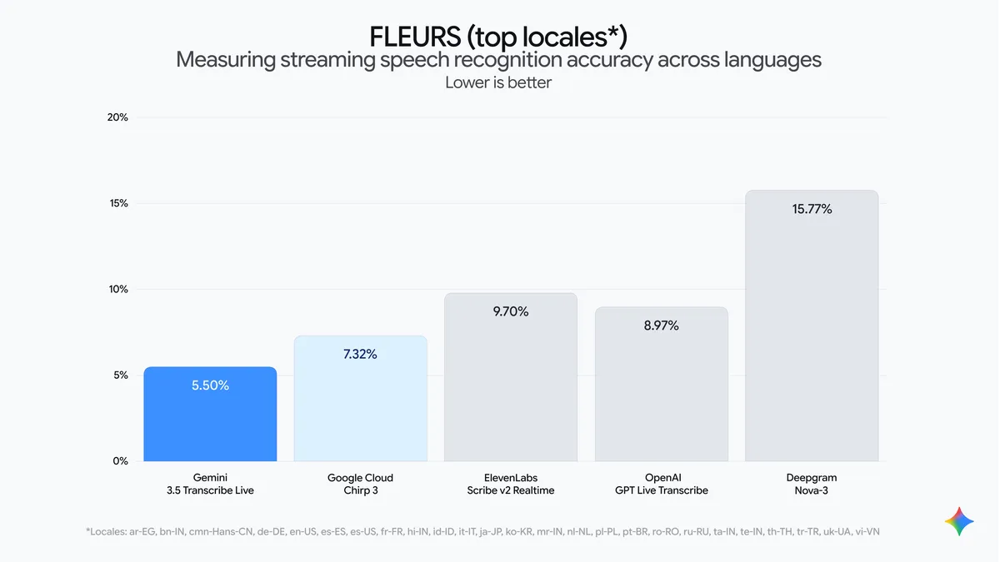
Gemini 3.5 Transcribe launch, Aug 2026.
Live error on Google's choice of FLEURS languages: Gemini 5.5%, Deepgram Nova-3 15.8%. Useful mainly to show how wide multilingual live gaps are.
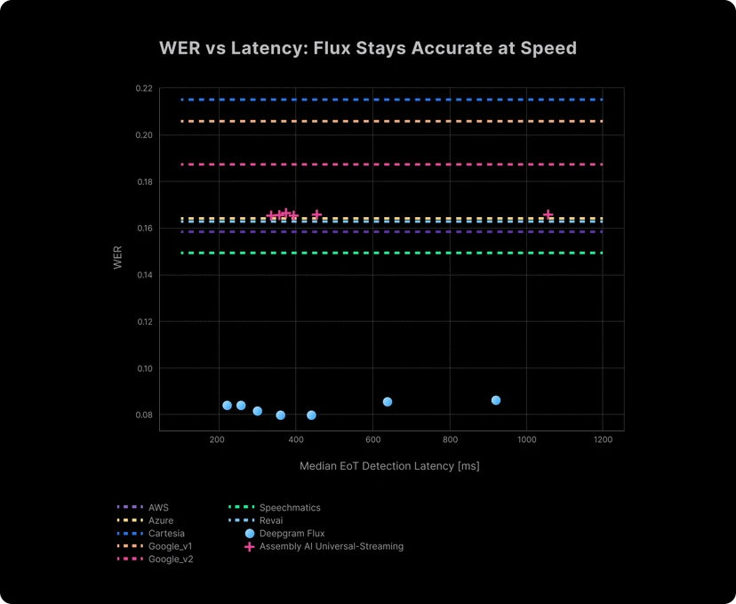
Flux launch page, Oct 2025.
Flux at about 8% error, rivals drawn as flat lines at 15–21%. On Artificial Analysis's live board Flux is the fastest, at 7.4% error, in the bottom third for accuracy.
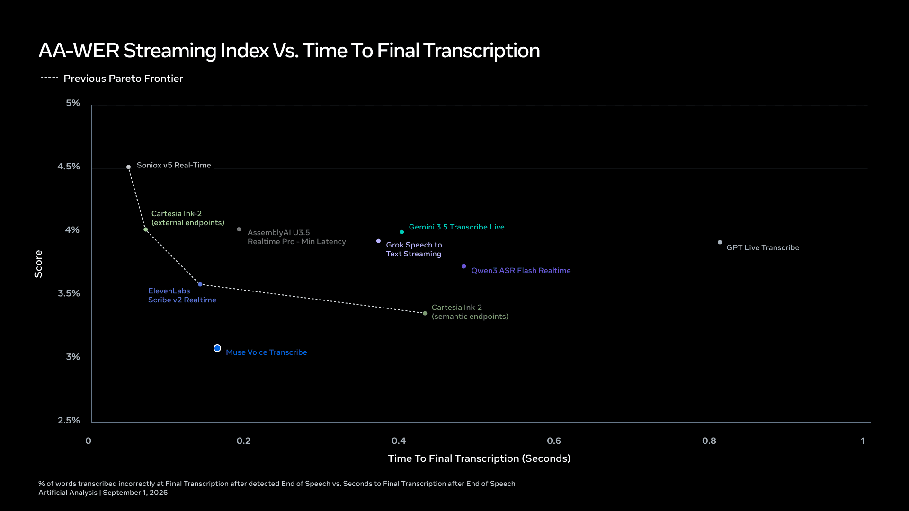
Muse Voice Transcribe launch, Sep 2026.
Meta plotted Artificial Analysis's own figures with Muse below the frontier. Two months later, MAI-Transcribe-2 Streaming and ElevenLabs had moved past it.
Method for the frontier charts
Recorded audio
Error rate against list price per audio hour.
Cross-check: Open ASR Leaderboard
Live audio
Error rate against price, and against time to the final transcript.
Cross-check: Pipecat, median and slowest 5%
Running it yourself
Error rate of open models against GPU cost, from measured throughput.
GPU cost: our estimate at $4 an hour
- Lower is better. The charts show error rates, so better options sit higher on a flipped axis.
- One board per view. Boards use different audio and define cost and latency differently. Switch views to cross-check.
- Price per audio hour, converted from the board's price per 1,000 minutes. Boards may use older list prices than research pack B.
- Near the frontier. Dashed rings mark options within 0.25 points of the frontier: treat these as ties.
Frontier: recorded audio
Frontier: live audio
Frontier: open models you run yourself
Independent diarisation results
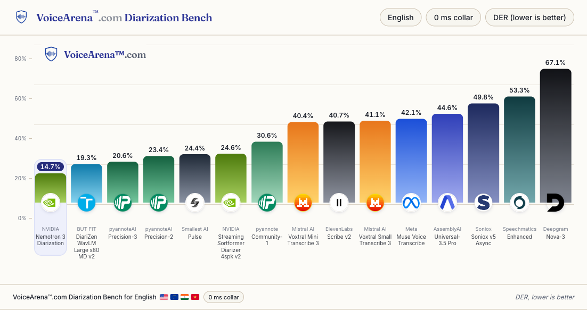
- Dedicated diarisation models lead: NVIDIA's open Nemotron 3 Diarization at 14.7%, then DiariZen and pyannoteAI.
- The speaker labels built into transcription APIs score 40–67% on the same audio.
- Scoring rules matter: with a quarter-second collar, Nemotron scores 4.3%; AssemblyAI reports 12.2% for itself without scoring overlap.
- No diarisation board publishes cost.
Conclusions
Decision guide
Default picks by situation
| Situation | Start with | Test against | Watch out for |
|---|---|---|---|
| Recorded calls or meetings, mainly English | Microsoft MAI-Transcribe-2 (about $0.10 an hour at the promotional price) or ElevenLabs Scribe v2 ($0.22) | Soniox v5 ($0.10) and AssemblyAI Universal-3.5 Pro ($0.21) | MAI-Transcribe-2 is in preview and its promotion ends on 31 December 2026 |
| Recorded, with speakers from one channel | AssemblyAI Universal-3.5 Pro or ElevenLabs Scribe v2, both with speaker labels included | A dedicated model: NVIDIA Nemotron 3 Diarization (open) or pyannoteAI Precision-3 | Built-in labels scored 40–67% DER on the independent board; dedicated models 15–21% |
| Live captions or agent assist | ElevenLabs Scribe v2 Realtime ($0.39) or AssemblyAI Universal-3.6 Pro Realtime ($0.45) | Speechmatics Melia ($0.20, live speaker labels included) or Soniox v5 ($0.12) | Partial results that change on screen; record one channel per speaker |
| Voice agents | Deepgram Flux ($0.46, turn detection in the model) or AssemblyAI Universal-3.6 Pro Realtime | ElevenLabs Scribe v2 Realtime with Pipecat Smart Turn; MAI-Transcribe-2 Streaming | Measure interruptions and the slowest 5% of replies, not the median |
| Many languages | MAI-Transcribe-2 (60), Gemini 3.5 Transcribe (85+) or ElevenLabs Scribe v2 (90+) | A regional specialist: Sarvam for India, Cohere Transcribe Arabic for Arabic | Check the live language list separately; test mixed-language calls |
| Medical consultations | ElevenLabs Scribe v2 or AssemblyAI Universal-3 Pro Medical, batch after the visit | Gemini 3 Pro, which had the lowest medical-term error on PriMock57 | Keep the audio; check invented text in pauses; HIPAA agreements |
| Audio must stay in Azure | Azure Speech ($0.18 batch, $1.00 live) or MAI-Transcribe-2 | OpenAI GPT-Transcribe in Azure ($0.27, no speaker labels) | Live speaker labels +$0.30 an hour; OpenAI's older models shut down 26 Feb 2027 |
| Audio must stay in AWS | Amazon Transcribe ($0.36 batch, $0.60 live, speaker labels included); Call Analytics for contact centres | Voxtral Realtime on SageMaker, or Deepgram's SageMaker package | Mid-table on accuracy and slow live; confirm the new flat price |
| Audio must stay in Google Cloud | Gemini 3.5 Transcribe on Vertex ($0.31 batch, $0.54 live) | Chirp 3 for batch speaker labels | No live speaker labels; live sessions capped at 10 minutes |
| No external services at all | Batch: NVIDIA Nemotron 3.5 Transcribe. Live: Nemotron 3.5 ASR Streaming with Streaming Sortformer and Smart Turn | Parakeet TDT for cheap bulk; Whisper large-v3 turbo for breadth; commercial containers (Deepgram, Speechmatics) | Engineering effort and peak capacity; Sortformer handles at most 4 speakers |
Our judgement from the benchmarks and prices in this session, dated 3 November 2026. List prices per audio hour.
Testing on client audio
Collect real audio
50–100 clips from the client's own channels: phone calls as recorded, meeting rooms, each main accent and language, plus hold music, silence and cross-talk.
Write references
Double-checked verbatim transcripts with speaker turns, and a list of the words that matter: names, products, amounts, IDs.
Test three options
A cheap baseline, the default pick and a premium option, with the same settings. For live use, test over the client's real network and telephony.
Measure
Error rate with a stated normaliser, errors on key words, speaker errors, text invented in silence, time to final at the median and slowest 5%, and cost including channels and add-ons.
Check where audio goes
Region, retention, whether audio is used for training, and whether speaker analysis needs consent. Confirm with the client.
Date and repeat
Re-run every quarter. OpenAI, Google, Microsoft, Meta and Mistral all launched new transcription models between July and October 2026.
Sources and further reading
All prices and scores as of 3 November 2026. Third-party images are credited on each slide and used for internal teaching.
Discussion questions
- Which client "real-time" request needed sub-second results, and which only needed them within a few seconds?
- Where would recording each speaker on their own channel remove a problem we were about to solve with a model?
- What would we need to see before trusting a transcript as the record of a regulated conversation?
Next session: automated research and optimisation · All sessions